Ogni contributo verifica fonti primarie e indica cosa cambia per il destinatario. Mai marketing, mai pareri travestiti.
Il dubbio sull'autenticità di un testamento olografo apre uno dei contenziosi successori più delicati. Contestare la provenienza della scheda non equivale a chiederne la nullità: l…
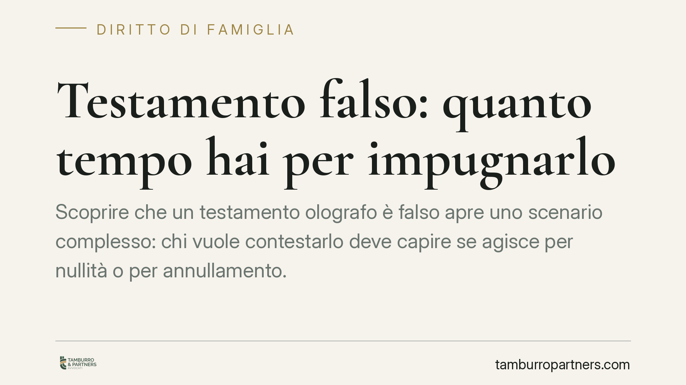
Scoprire che un testamento olografo è falso apre uno scenario complesso: chi vuole contestarlo deve capire se agisce per nullità o per annullamento. La differenza non è formale, pe…
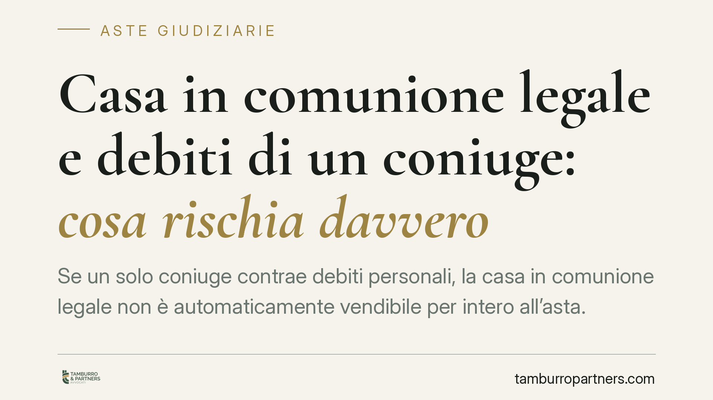
Se un solo coniuge contrae debiti personali, la casa in comunione legale non è automaticamente vendibile per intero all'asta. Il creditore particolare incontra limiti precisi: aggr…
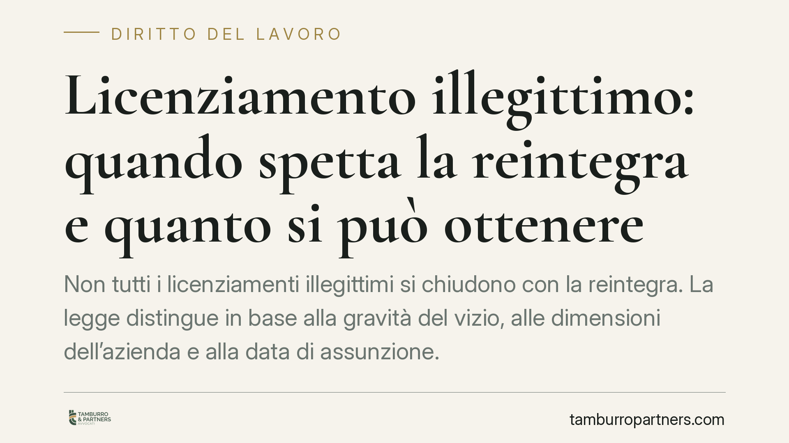
Non tutti i licenziamenti illegittimi si chiudono con la reintegra. La legge distingue in base alla gravità del vizio, alle dimensioni dell'azienda e alla data di assunzione. Capir…
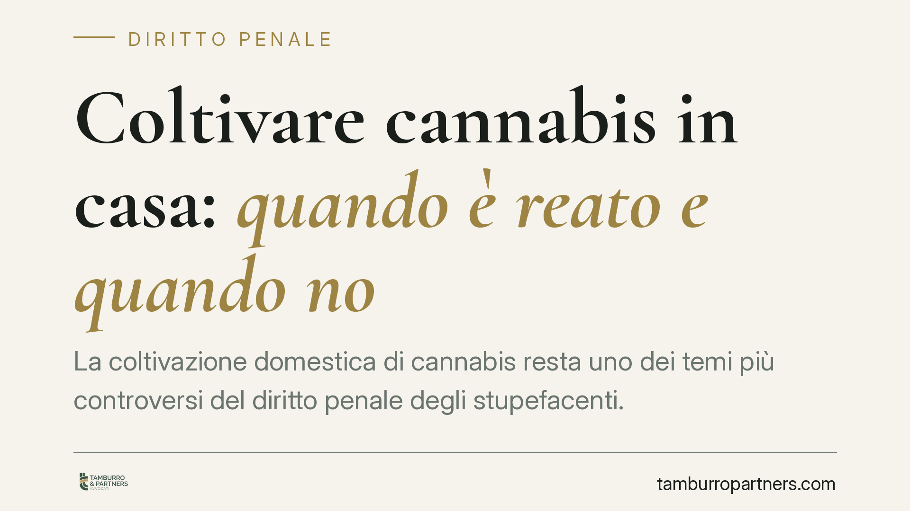
La coltivazione domestica di cannabis resta uno dei temi più controversi del diritto penale degli stupefacenti. Tra la sanzione amministrativa per l'uso personale e il reato di spa…
Chi acquista un immobile con denaro proprio teme di doverlo condividere con il coniuge in caso di separazione. In regime di comunione dei beni, però, l'art. 179 del Codice civile p…
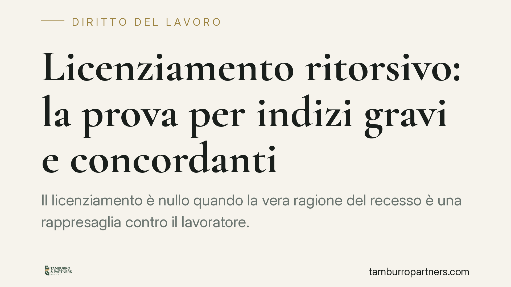
Il licenziamento è nullo quando la vera ragione del recesso è una rappresaglia contro il lavoratore. La giurisprudenza consolidata ammette che questa natura ritorsiva possa emerger…
In comunione legale gli acquisti fatti durante il matrimonio ricadono di regola in comproprietà tra i coniugi. Esistono però eccezioni: alcuni immobili possono restare personali. C…
Pago, ma la merce non arriva. È truffa o semplice inadempimento? La distinzione non è teorica: cambia il rimedio, i termini e l'autorità cui rivolgersi. Il confine sta nel dolo ini…
La fideiussione non è un impegno illimitato nel tempo. L'art. 1956 del Codice civile libera il garante quando il creditore, senza autorizzazione, concede nuovo credito a un debitor…
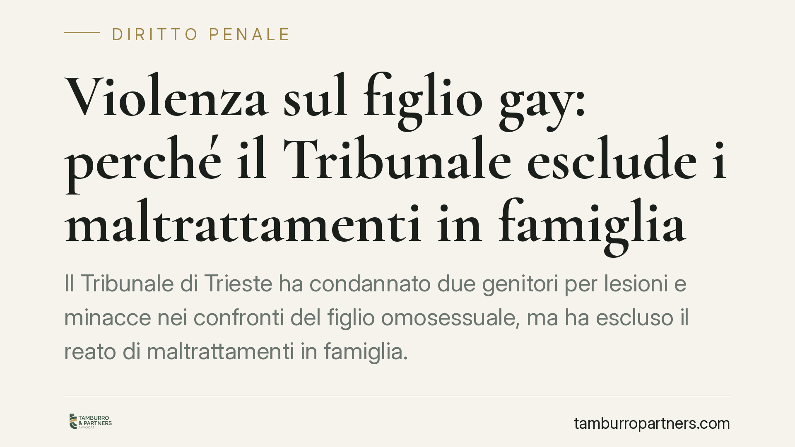
Il Tribunale di Trieste ha condannato due genitori per lesioni e minacce nei confronti del figlio omosessuale, ma ha escluso il reato di maltrattamenti in famiglia. La ragione: man…
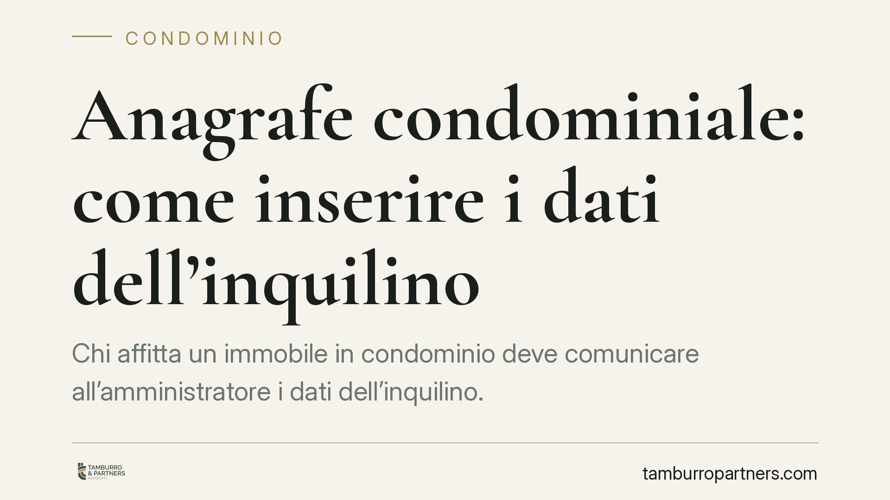
Chi affitta un immobile in condominio deve comunicare all'amministratore i dati dell'inquilino. È un obbligo introdotto dalla riforma del 2012, spesso trascurato, che tocca proprie…
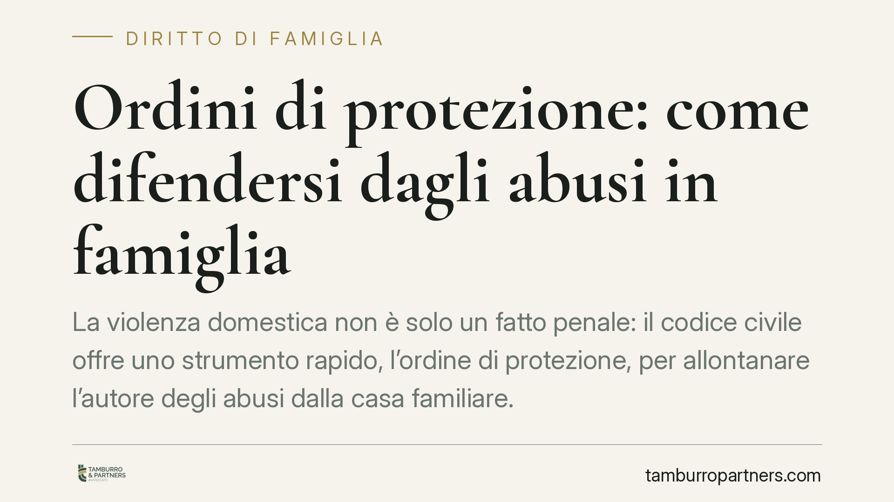
La violenza domestica non è solo un fatto penale: il codice civile offre uno strumento rapido, l'ordine di protezione, per allontanare l'autore degli abusi dalla casa familiare. Ve…
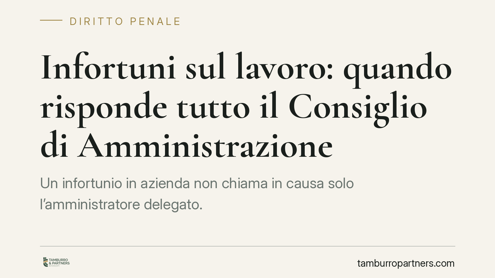
Un infortunio in azienda non chiama in causa solo l'amministratore delegato. Secondo la Cassazione, in assenza di una delega di funzioni formalizzata, la responsabilità penale per …
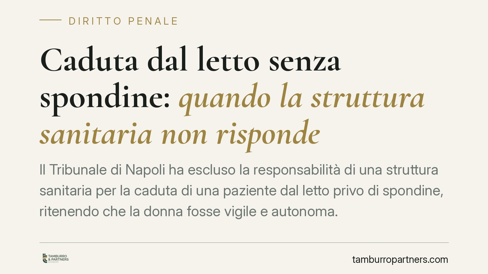
Il Tribunale di Napoli ha escluso la responsabilità di una struttura sanitaria per la caduta di una paziente dal letto privo di spondine, ritenendo che la donna fosse vigile e auto…
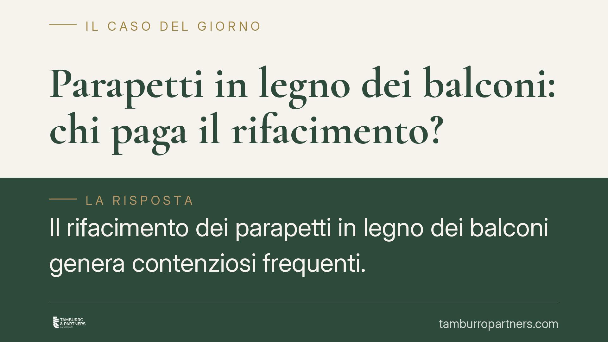
Il rifacimento dei parapetti in legno dei balconi genera contenziosi frequenti. La regola è che l'elemento privato resta a carico del proprietario, ma quando il parapetto concorre …
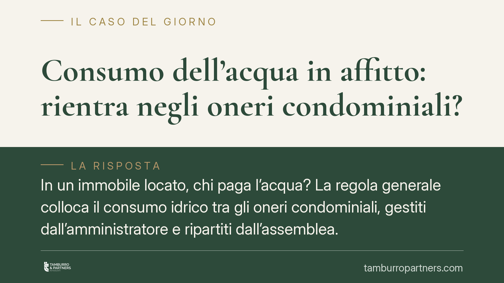
In un immobile locato, chi paga l'acqua? La regola generale colloca il consumo idrico tra gli oneri condominiali, gestiti dall'amministratore e ripartiti dall'assemblea. Ma tra pro…
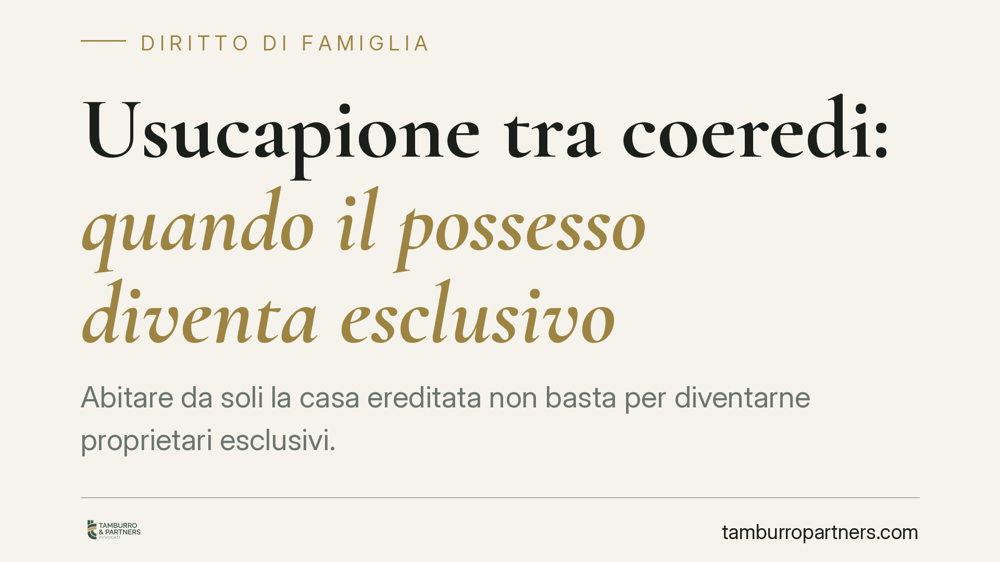
Abitare da soli la casa ereditata non basta per diventarne proprietari esclusivi. Chi invoca l'usucapione tra coeredi deve dimostrare un possesso pieno ed escludente, incompatibile…
Chi si vanta di conoscenze influenti per farsi consegnare denaro non commette più il vecchio «millantato credito», abrogato nel 2019. La condotta, però, può integrare il traffico d…
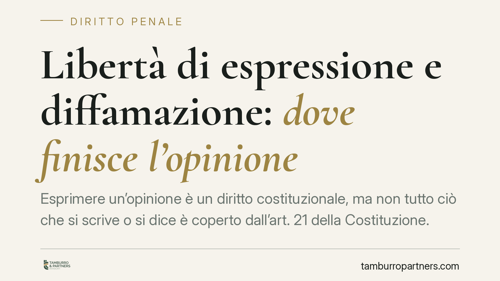
Esprimere un'opinione è un diritto costituzionale, ma non tutto ciò che si scrive o si dice è coperto dall'art. 21 della Costituzione. Tra critica lecita e diffamazione corre un co…
Chiamate e messaggi del datore durante le ferie sono una prassi diffusa, ma pongono un problema giuridico preciso: il lavoratore è obbligato a rispondere? La risposta tocca il diri…
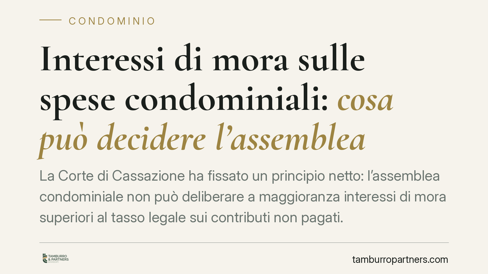
La Corte di Cassazione ha fissato un principio netto: l'assemblea condominiale non può deliberare a maggioranza interessi di mora superiori al tasso legale sui contributi non pagat…
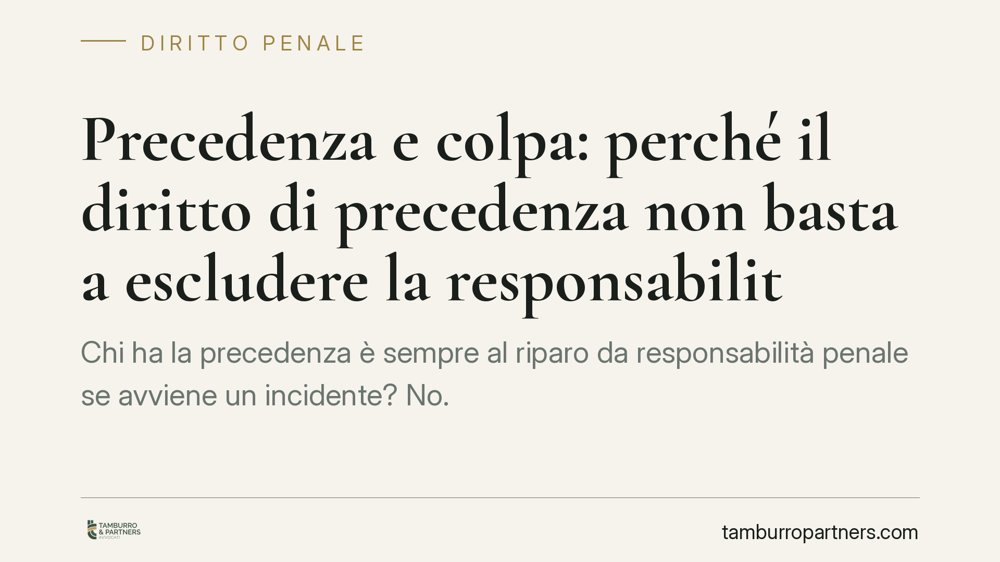
Chi ha la precedenza è sempre al riparo da responsabilità penale se avviene un incidente? No. Secondo l'orientamento della Suprema Corte, il rispetto formale della regola non basta…
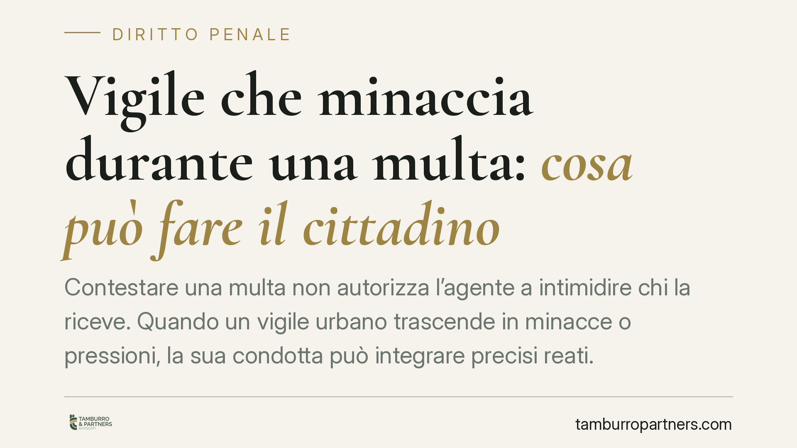
Contestare una multa non autorizza l'agente a intimidire chi la riceve. Quando un vigile urbano trascende in minacce o pressioni, la sua condotta può integrare precisi reati. La qu…
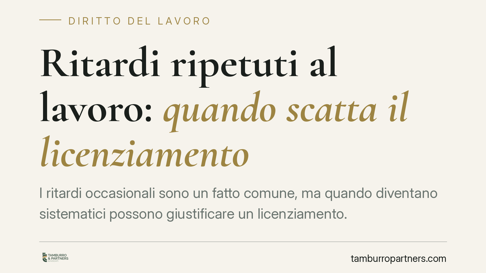
I ritardi occasionali sono un fatto comune, ma quando diventano sistematici possono giustificare un licenziamento. La linea di confine passa dalla proporzionalità tra condotta e sa…
Una recente decisione di merito ha riconosciuto la liceità della geolocalizzazione dei lavoratori in smart working, purché proporzionata, trasparente e assistita dal confronto sind…
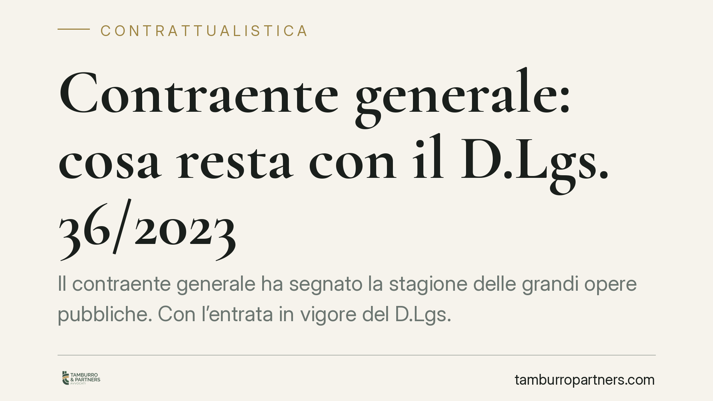
Il contraente generale ha segnato la stagione delle grandi opere pubbliche. Con l'entrata in vigore del D.Lgs. 36/2023 il quadro è mutato: la disciplina autonoma che il vecchio Cod…
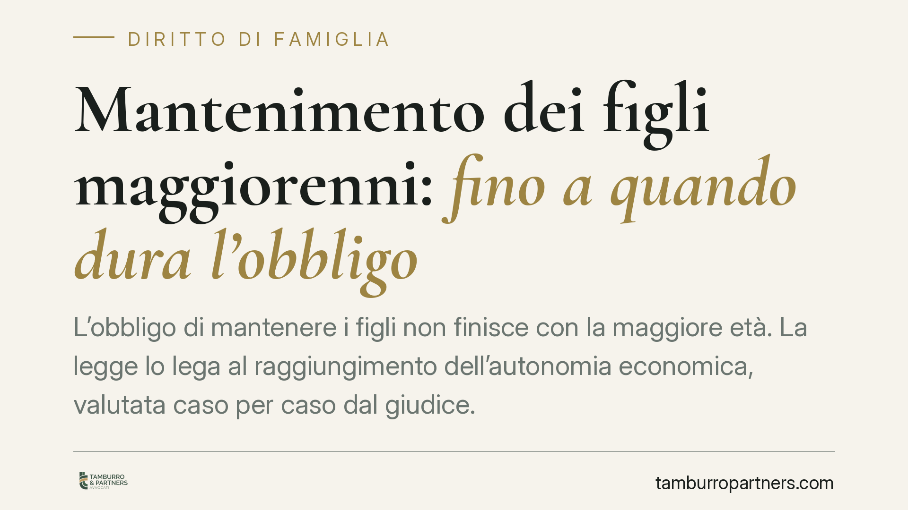
L'obbligo di mantenere i figli non finisce con la maggiore età. La legge lo lega al raggiungimento dell'autonomia economica, valutata caso per caso dal giudice. La Cassazione ha pe…
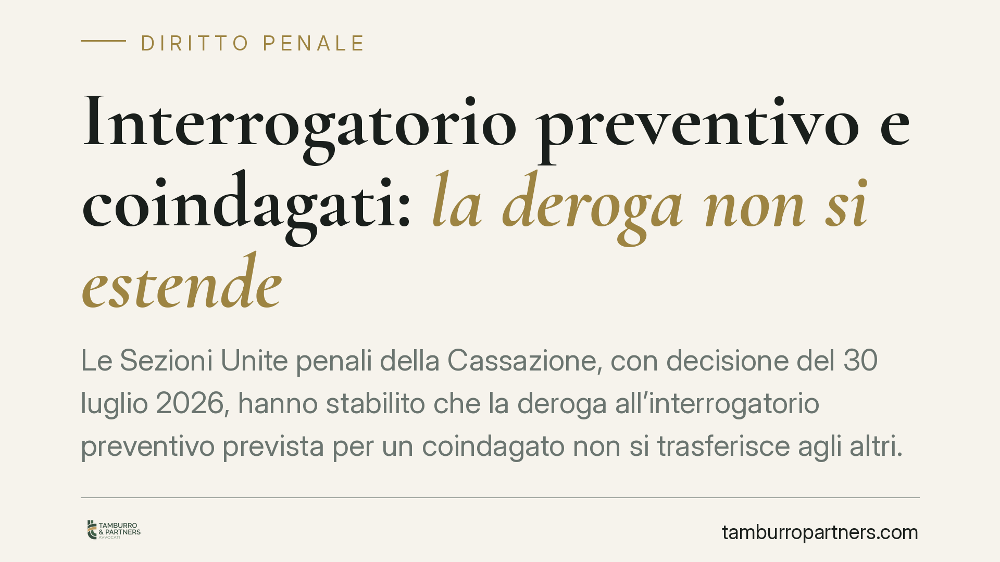
Le Sezioni Unite penali della Cassazione, con decisione del 30 luglio 2026, hanno stabilito che la deroga all'interrogatorio preventivo prevista per un coindagato non si trasferisc…
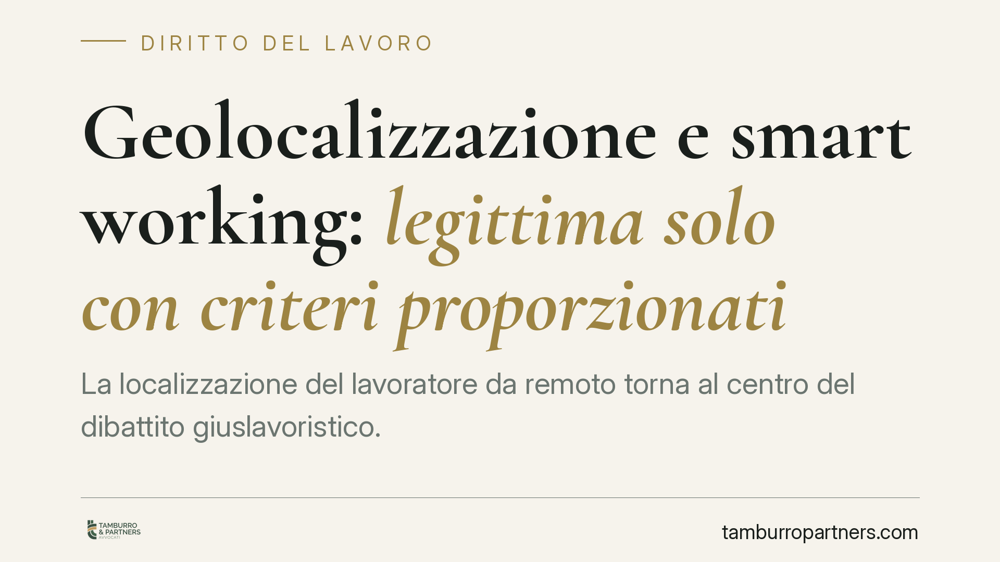
La localizzazione del lavoratore da remoto torna al centro del dibattito giuslavoristico. L'orientamento consolidato ammette la geolocalizzazione solo se sorretta da criteri propor…